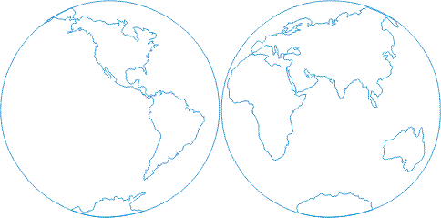
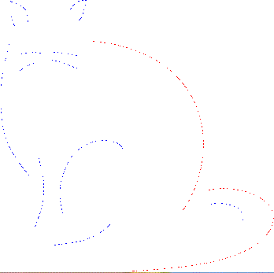

1.2.5.2 Векторная графика
Программные средства для работы с векторной графикой предназначены в первую очередь для создания иллюстраций и в меньшей степени для их обработки. Такие средства широко используют в рекламных агентствах, дизайнерских бюро, редакциях и издательствах. Оформительские работы, основанные на применении шрифтов и простейших геометрических элементов, решаются средствами векторной графики намного проще.
Как в растровой графике основным элементом изображения является точка, так в векторной графике основным элементом изображения является линия (при этом не важно, прямая это линия или кривая).

Рисунок 1 - Пример векторного рисунка
Изображения в векторной графике, в отличие от растровых, существуют в виде набора математических формул (графических примитивов), которые описывают отдельные элементы рисунка - линии, дуги, окружности и т. д. Эти элементы являются дискретными, они не связаны между собой, и размеры их легко изменить без потери качества рисунка.
Основные типы линий: прямая линия, кривая второго порядка (парабола, не имеет точек перегиба) и кривая третьего порядка (имеет точки пегегиба).
Для воспроизведения векторного изображения надо задать параметры рисунка на экране (разрешающую способность и размеры), после чего положение каждой точки рисунка просто рассчитывается по формулам, записанным в векторном графическом файле. Поэтому объекты векторной графики занимают значительно меньше места в памяти компьютера. Например, в растровой графике тоже существуют линии, но там они рассматриваются как комбинации точек. Для каждой точки линии в растровой графике отводится одна или несколько ячеек
памяти (чем больше цветов могут иметь точки, тем больше ячеек им выделяется). Соответственно, чем длиннее растровая линия, тем больше памяти она занимает. А в векторной графике объем памяти, занимаемый линией, не зависит от размеров линии, поскольку линия представляется в виде формулы. Что бы мы ни делали с этой линией, меняются только ее параметры, хранящиеся в ячейках памяти. Для записи кривой третьего порядка необходимо девять параметров, для остальных - меньше. Количество же ячеек остается неизменным для любой линии.
Линия имеет свойства: форму, толщину, цвет и характер (сплошная, пунктирная и т. д.). Линии образуют контур. Контуры имеют свойство заполнения. Внутренняя область замкнутого контура может быть заполнена цветом, текстурой, картой. С несколькими контурами можно выполнять операции группирования, комбинирования, объединения и т. д. Простейшая незамкнутая линия имеет две вершины, которые называются узлами.
Для рисования кривых третьего порядка в редакторах применяют их особый вид, называемый кривыми Безье.

Рисунок 2 - Элементы кривой
Метод построения кривых Безье основан на использовании пары касательных, проведенных к линии в точках ее концов. На рис. 2 показаны элементы кривой Безье. На форму линии влияет не только угол наклона касательной, но и длина ее отрезка.
Векторные изображения создаются и редактируются средствами профессиональных приложений: CorelDRAW, Adobe Illustrator и др. При работе используются всевозможные математические описания сегментов и областей, закрепленные отметки, направляющие точки и т. п.
Cфера применения векторной графики очень широка. Во-первых, она играет огромную роль в компьютерной полиграфии. Векторными методами формируются не только шрифты TrueType, но и сотни разнообразных рисунков, которые легко масштабировать и использовать в печатных изданиях и видеоматериалах. Примерами таких рисунков являются рисунки, поставляемые в библиотеках рисунков Microsoft Clipart Gallery (файлы .WMF). Во-вторых, векторные методы незаменимы в конструкторской и научной деятельности - в системах компьютерного черчения, автоматизированного проектирования, в трехмерной графике и т. д.